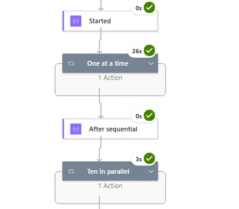
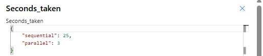

- Power Automate
- Level 4 · Reliable flows · 4 of 7
Concurrency control
An Apply to each processes items one at a time by default. If the items don't depend on each other, the loop can process several at once. The same loop of ten 2-second waits took 26 seconds one at a time and 3 seconds in parallel.
Same loop, two settings
WhatA loop setting (degree 1 to 50) and a trigger setting (how many runs at once).
WhyParallel iterations save time on slow, independent work; one-at-a-time protects shared data.
DemoTen items, each waiting 2 seconds.
Ten 2-second items
| Setting | How they run | Time |
|---|---|---|
| Default (1) | 25–26 s | |
| Degree 10 | 3 s |
In parallel, all ten start together, so the loop takes about as long as one item.


The setting
Select the loop → Settings → turn on Concurrency control → Degree of parallelism 1 to 50. (See Conditions, Switch and loops for the screenshot.)
Should I turn it on?
Does any iteration depend on another, or change a shared variable?
No
Can the target service take the load?
Yes → turn it on (start around 5–20)
Yes
Keep it at 1 (one at a time)
| Turn it on when | Keep it off when | |
|---|---|---|
| Dependence | Each item is independent | A later item reads what an earlier one wrote |
| Speed | Each item waits on a slow service | Order matters (running totals, numbering) |
| Target | The service handles the load | It throttles quickly (many 429s) |
Watch out
- Variables in a parallel loop give wrong totals. Collect Compose outputs after the loop instead.
- In nested loops, only the outer loop runs in parallel.
Trigger concurrency
Many runs at once vs a queue
Off (default)
Runs start as soon as triggered, in parallel
On, limit 1
Runs queue and go one by one
Safe when each run updates the same record or file
Watch out
- Once turned on, trigger concurrency can't be turned off without deleting and re-adding the trigger.
- Split on is limited to 100 items when trigger concurrency is on.
New to this? Start from the basics optional
Degree of parallelism: the most iterations allowed at the same time.
Throttling: a service refusing requests (429) because you sent too many.
Common mistakes
- Parallel loops that set variables.
- Degree 50 against a service that throttles.
- Expecting numbered output in order from a parallel loop.